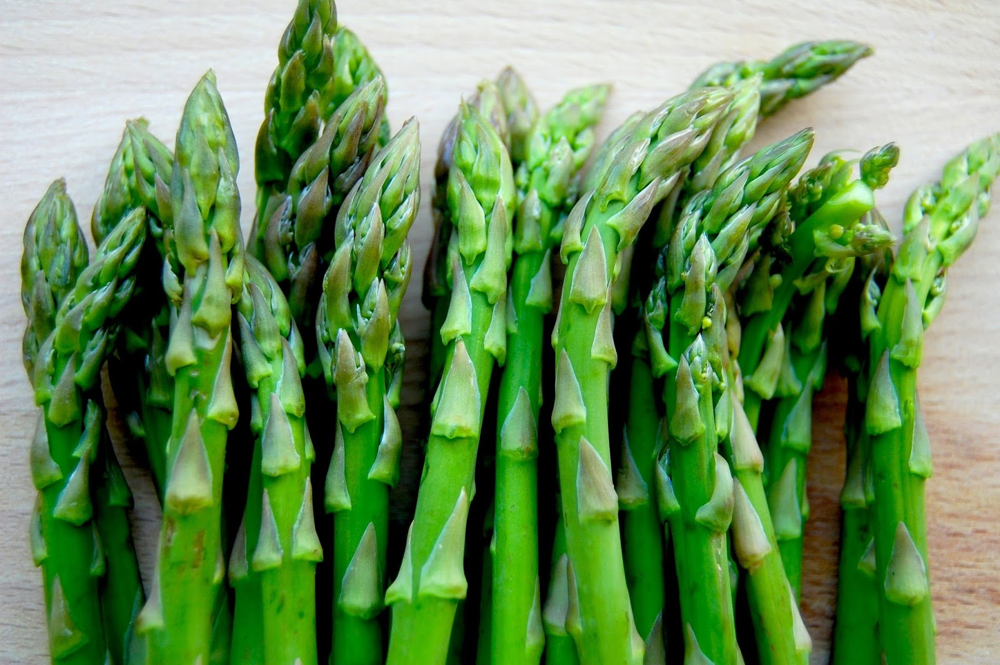

JESTES SZPARAGAMI (lub szparagiem)
 Szparagi sa dosc wyszukane
ja chyba nigdy nie jadlam wiec nie wiem jak ocenic
myslisz pewnie ze jestes jakiegos rodzaju elita
ale mimo to wcale nie jestes gburowaty dla innych
jestes mily i fajowy tylko chcialbys zeby ludzie mysleli bardziej jak ty
nie wiem jaka rade ci na to dac, chyba taki jestes i juz